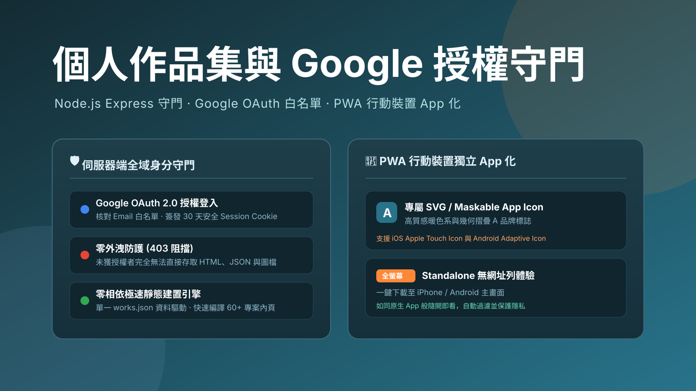

作品 · 生活工具
個人作品集
2026.08 · 個人專案

FIG. 02 — 產品主畫面
關於這個作品
Allen 的個人 AI 應用與專案作品集網站，收錄超過 60 個實作專案與方法論技能包。
以單一 works.json 為資料核心，搭配極簡 Node 建置腳本自動生成首頁與各專案獨立內頁；支援主題與類型多維交叉篩選，並全面支援 PWA 漸進式網頁應用，可一鍵下載至手機主畫面實現獨立全螢幕 App 體驗。
作品亮點
資料與版面分離：單一 works.json 驅動 60+ 筆專案獨立內頁
零前端框架依賴：原生 HTML/CSS/JS 極速載入與精準排版
多維交叉篩選：支援主題分類、專案與技能包即時動態過濾
PWA 行動端支援：可一鍵加入 iPhone / Android 主畫面全螢幕使用